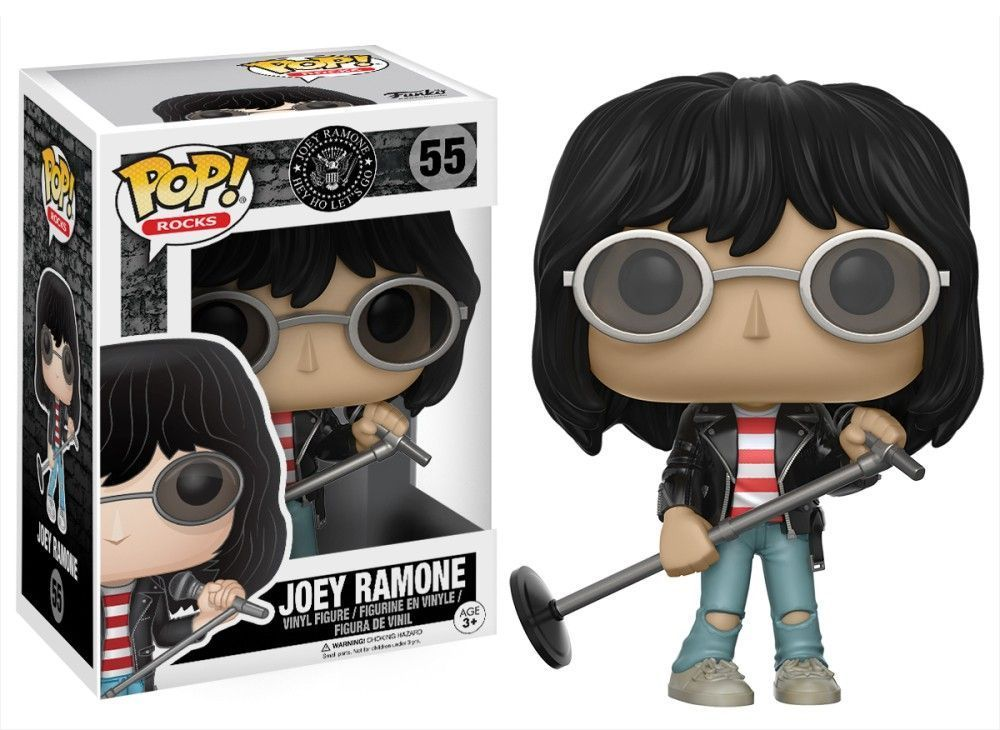
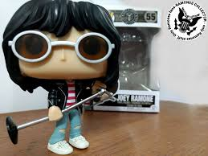

Las teorías Del clásico "Pet Sematary"
Para nadie es un secreto la afinidad entre Stephen King y los Ramones, de hecho el autor tiene un libro titulado Pet Sematary y los rockeros también tienen una canción con el mismo título. Si bien existe una historia que conecta ambas creaciones, los hechos parecen ser un tanto confusos.
Una de las versiones es la anécdota compartida por Marky Ramone en Punk Rock Blitzkrieg: My Life as a Ramone, su autobiografía publicada en 2014. De acuerdo con el baterista, el escritor lo invitó a él y al resto de la banda a cenar en el sótano de su casa en Bangor, Maine.
Dicha velada ocurrió en 1982, poco después de que King los contratara para tocar en asociación con una estación radial. De acuerdo con el mítico percusionista, Stephen “le entregó a Dee Dee [Ramone] una copia de su novela más vendida, Pet Sematary“. No obstante, el autor nacido en Portland desmintió ese relato durante una entrevista con Rolling Stone en la cual aclaró:
“No comimos en mi casa. Ni siquiera vinieron a casa. Comimos en Miller’s Restaurant, el único restaurante elegante de Bangor. No recuerdo si hablamos de Pet Sematary. Podría haber dicho algo sobre una canción. Lo que recuerdo es que Marky era el único que se expresaba bien. Los otros realmente no articulaban mucho”.
Ramones. Para nadie es un secreto la afinidad entre Stephen King y los Ramones, de hecho el autor tiene un libro titulado Pet Sematary y los rockeros también tienen una canción con el mismo título. Si bien existe una historia que conecta ambas creaciones, los hechos parecen ser un tanto confusos. Una de las versiones es la anécdota compartida por Marky Ramone en Punk Rock Blitzkrieg: My Life as a Ramone, su autobiografía publicada en 2014. De acuerdo con el baterista, el escritor lo invitó a él y al resto de la banda a cenar en el sótano de su casa en Bangor, Maine. Stephen King. Stephen King. Foto: Steve Schofield Dicha velada ocurrió en 1982, poco después de que King los contratara para tocar en asociación con una estación radial. De acuerdo con el mítico percusionista, Stephen “le entregó a Dee Dee [Ramone] una copia de su novela más vendida, Pet Sematary“. No obstante, el autor nacido en Portland desmintió ese relato durante una entrevista con Rolling Stone en la cual aclaró: “No comimos en mi casa. Ni siquiera vinieron a casa. Comimos en Miller’s Restaurant, el único restaurante elegante de Bangor. No recuerdo si hablamos de Pet Sematary. Podría haber dicho algo sobre una canción. Lo que recuerdo es que Marky era el único que se expresaba bien. Los otros realmente no articulaban mucho”. No obstante, más adelante King explicó que pese a todo, le hace algo de gracia la historia alternativa sobre esa noche: “Le dije a mi editor: ‘Esta historia de que vinieron a mi casa es una completa tontería’. Pero también dije: ‘No cambies ni una maldita palabra’. Es como James Stewart en The Man Who Shot Liberty Valance. Cuando la verdad y la leyenda se opongan, imprime la leyenda”. Vale recordar que el single “Pet Sematary” recién saldría a la luz en 1989 como parte del disco Brain Drain.

PUBLICIDAD
 